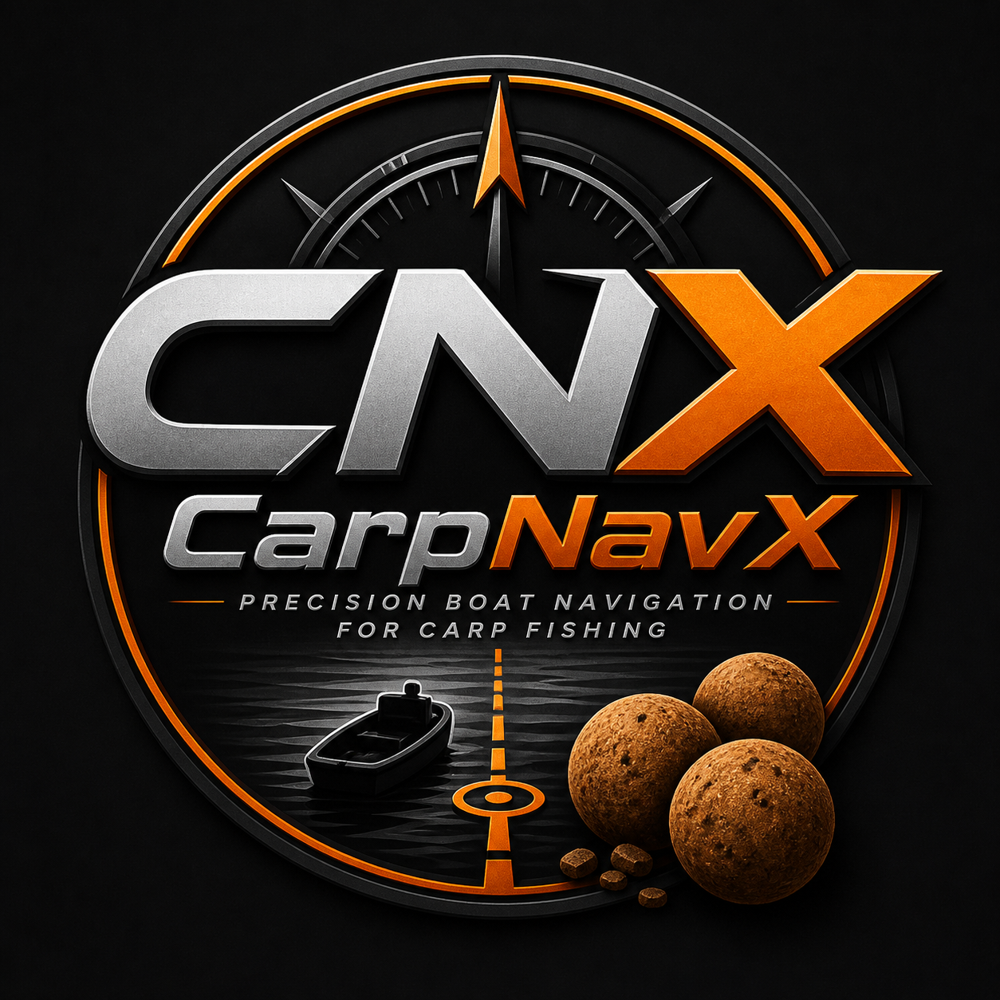

← Back to applications

CarpNavX
GPS navigation for boat anglers: approach feeding spots precisely, return more directly to your Home point, and save important water features, depths, obstacles and routes.